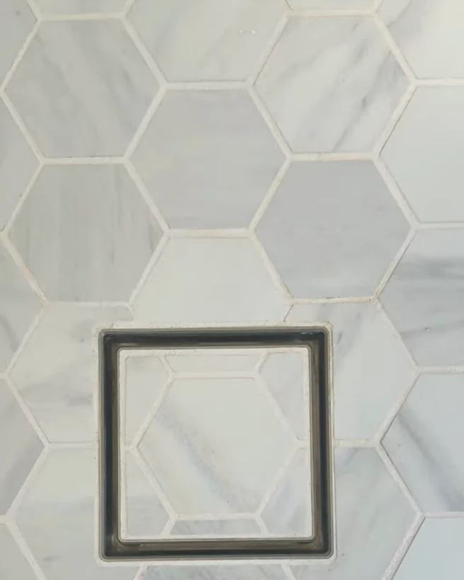
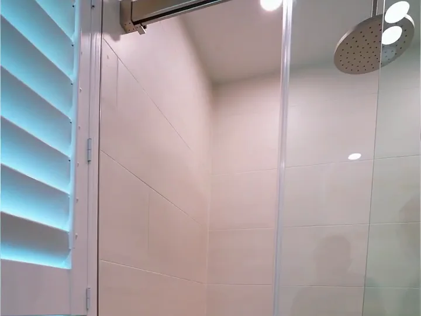
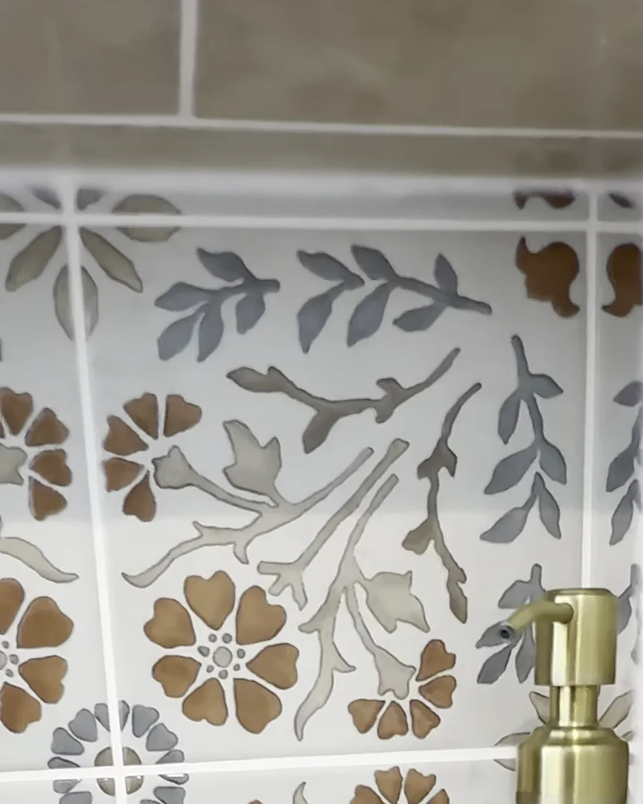
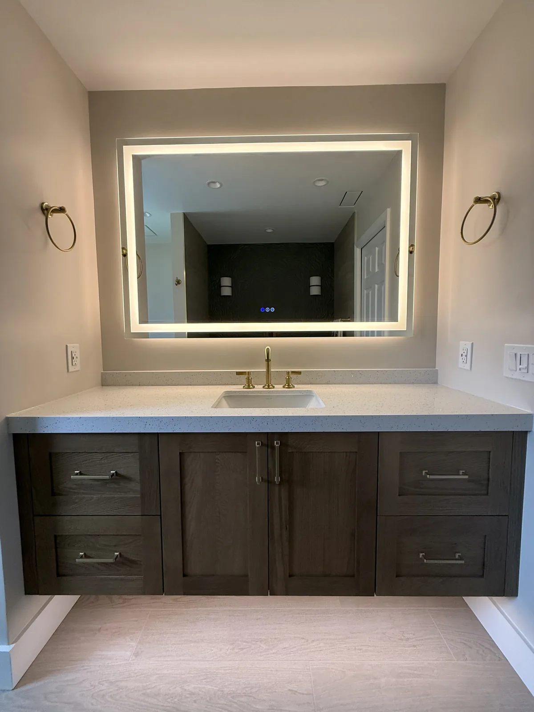
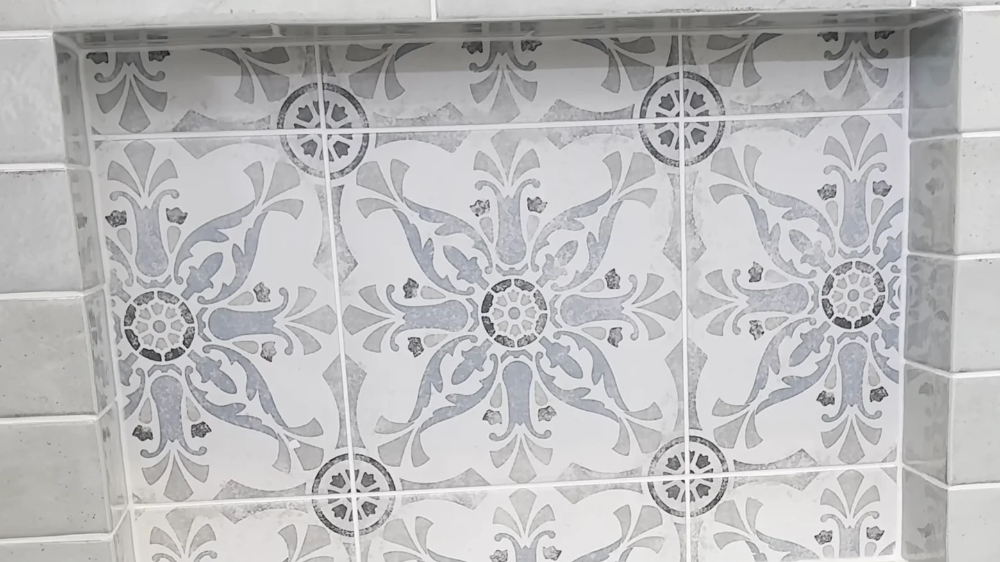
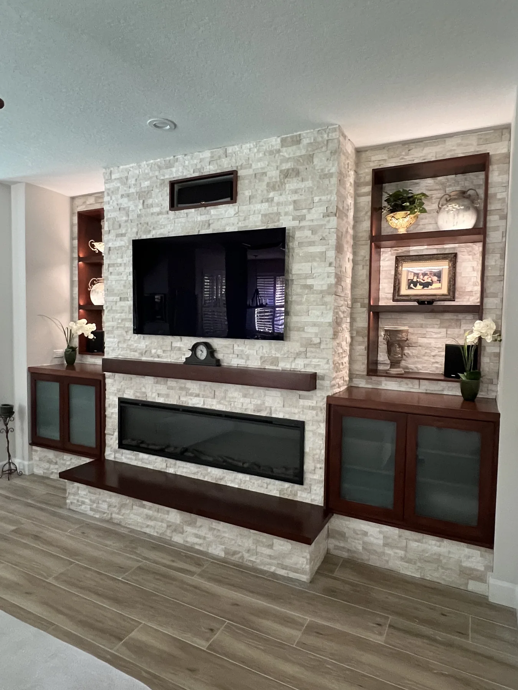
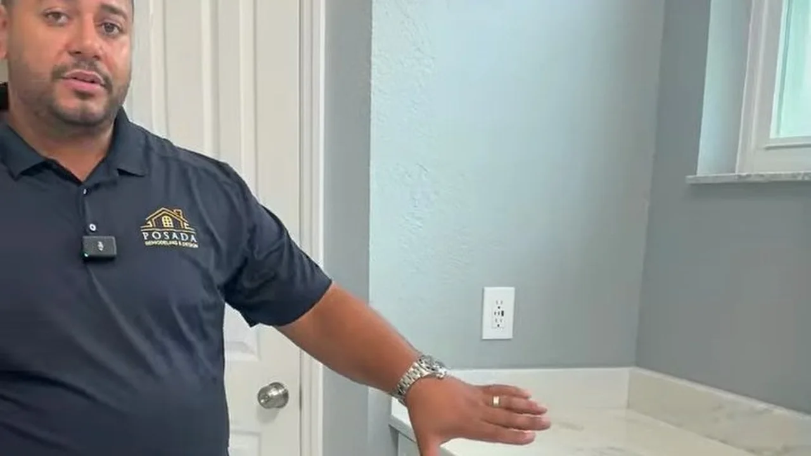
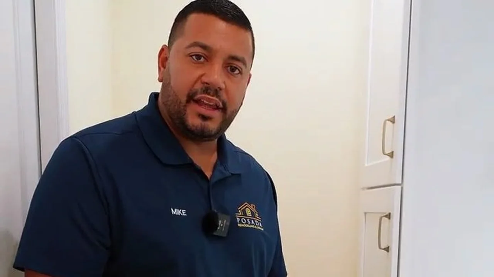
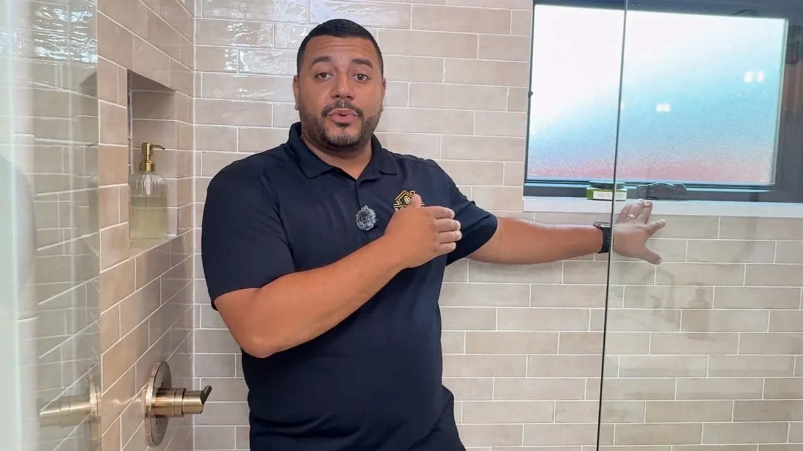

5.0
Google rating · 60+ reviews

Kitchens, bathrooms, floors and whole-home spaces across Orlando and Central Florida, photographed the way we left them: finished, clean and ready to live in.
Each story is drawn from Mike's own walkthrough film: what the owners asked for, what we changed, and the details worth copying.




A custom wood range hood, white shaker cabinetry, a quartz island with seating for three and wood-look tile floors, all in one Winter Garden home. The same kitchen is toured on film below and told room by room on its own project page.


Rain showers and hand showers, patterned and large-format tile, floating vanities with lit mirrors and a soaking tub under a textured accent wall, in homes across Orlando and Central Florida.





Feature walls, fireplaces, bonus rooms and whole-home flooring, by request. The same team, the same standard and the same three-year labor and installation warranty.



Short films of real Posada projects, explained by the owner: the tile, the valves, the storage, the details you only notice once you live with them. Tap any tile to play.
 Play · 8 min
Play · 8 min
Coffee bar, pot filler and smart storage, explained by Mike.

Play · 3:38A full walkthrough of the finished primary bath.

Play · 3:12A complete bathroom remodel, detail by detail.

Play · 4:43Two finished bathrooms in one Orlando home.
One team carries each project from the first drawing to the final walkthrough. Mike personally oversees every job, a project manager is your single point of contact, and the site is clean at the end of every day. All of it is backed by a three-year labor and installation warranty, with complete written warranty terms before you sign.
A complimentary consultation at your home. We listen first, tell you which budget range your project falls into, and put real numbers on it in an itemized proposal.
Call or text · We reply within 24 hours